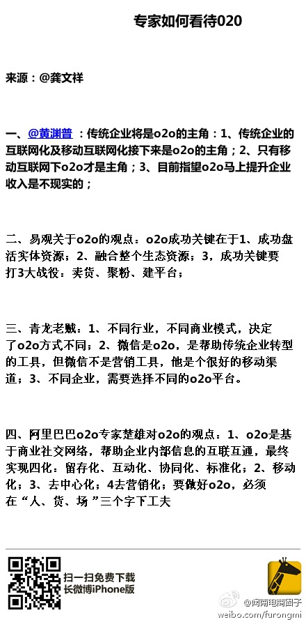

引流是第一步。//@龚文祥:不错的整理。我的o2o观点是：传统企业做o2o要分3步走，第一步做o2o引流；第二步做o2o渠道；第三步才开始做o2o新模式，不要一步到位；另外企业规模不同，行业不同，甚至老板的个性不同，其o2o操作手法绝不相同。现在的o2o文章及观点都是一概而论，泛泛而谈的。@土楼先生:o2o火爆至极，专家是如何分析的呢？来源 @龚文祥 微博，谢谢分享！ 
女人要懂得爱自己。//@协和张羽:羊水栓塞的故事早在《只有医生知道2》里就科普过。80年前老舍先生就写过只要孩子大人无所谓的《抱孙》，不过今天我突然意识到很多悲剧并不是科普不够知识不够，人世间的很多判断抉择靠的是常识和良心，在信仰缺失的年代，这竟成为奢侈品---:抱歉，作者已设置仅展示半年内微博，此微博已不可见。
我先生开车也遇到过，对方还并到旁边，摇下车窗破口骂，脸都变得很狰狞。我当时惊奇我先生不为所动，后来他说：“我开好我的车就行，他生气是他的事儿，我不生气”。- 跟SB计较什么？！---:抱歉，此微博已被作者删除。查看帮助： 网页链接
回复@思考的蛋://@思考的蛋:这一点有共鸣。夸张、轻浮的营销文案虽然仍在流行，但受众的防御心理已非常坚固。个性尽情鲜明，但诚实稳健的文风更赢得高匹配人群的信任——尤其是对于技术社区而言——一味鼓噪和动员，只能适得其反。@Ada李力:#读书# 文案的首要品格：诚实。- 这跟现实中得到得印象，反差还是挺大的。